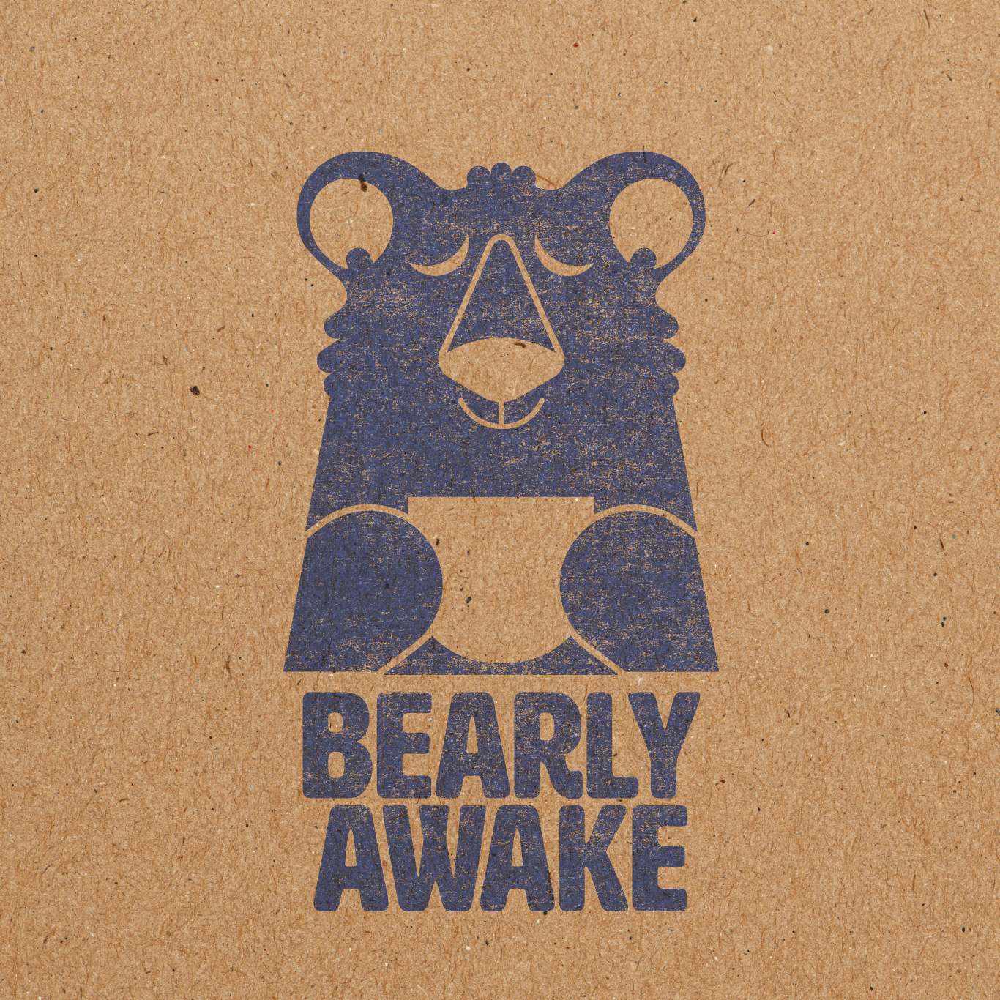
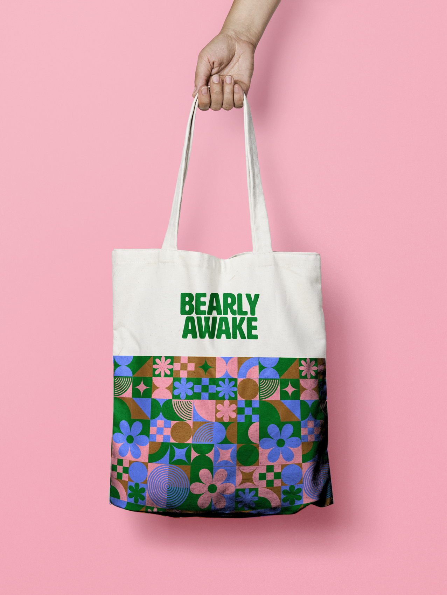
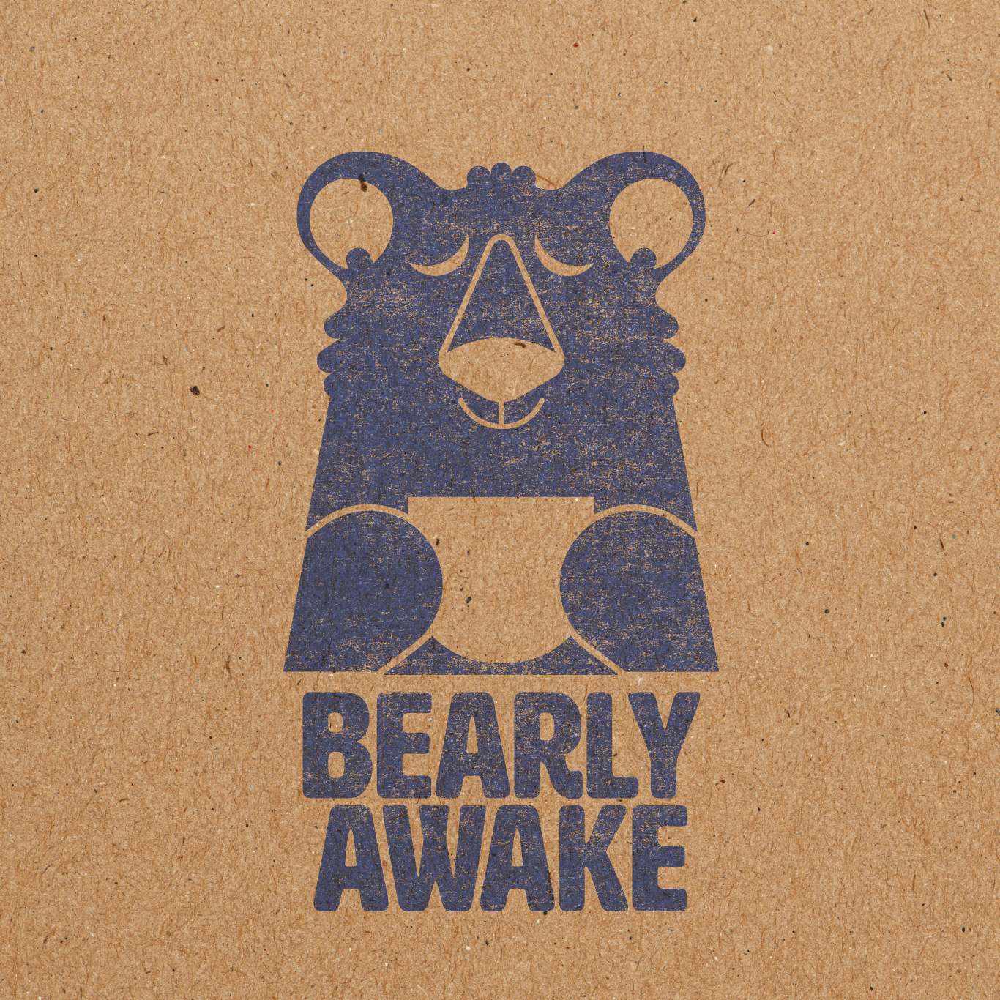
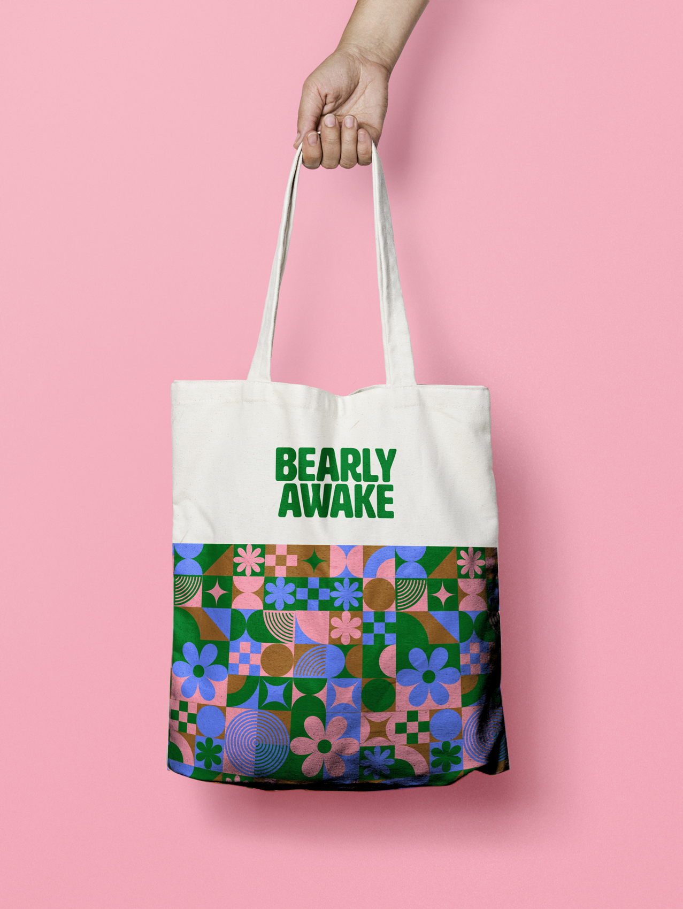

Bearly Awake
I was hired to create the branding for a local coffee shop, Bearly Awake Coffee Co. This branding project included logos, a menu, and a variety of merchandise and advertisements. The posters were created to decorate the side of the coffee stand, creating a fun environment and capturing the customers' attention.
The owners of the coffee shop wanted to create a brand that was welcoming and set them apart from other coffee shops in the area. When looking at other nearby stands, many had a very natural and organic feel, reflecting the nature found within the pacific northwest. After consulting with the owners, we decided to create a more modern and exciting branding scheme to stand out from the competition.
The shades of green and blue in the branding reflect the beautiful nature found on Whidbey Island, where the shop is located. The pink, however, creates a bright and fun pop of color to capture the audience's attention.
 


